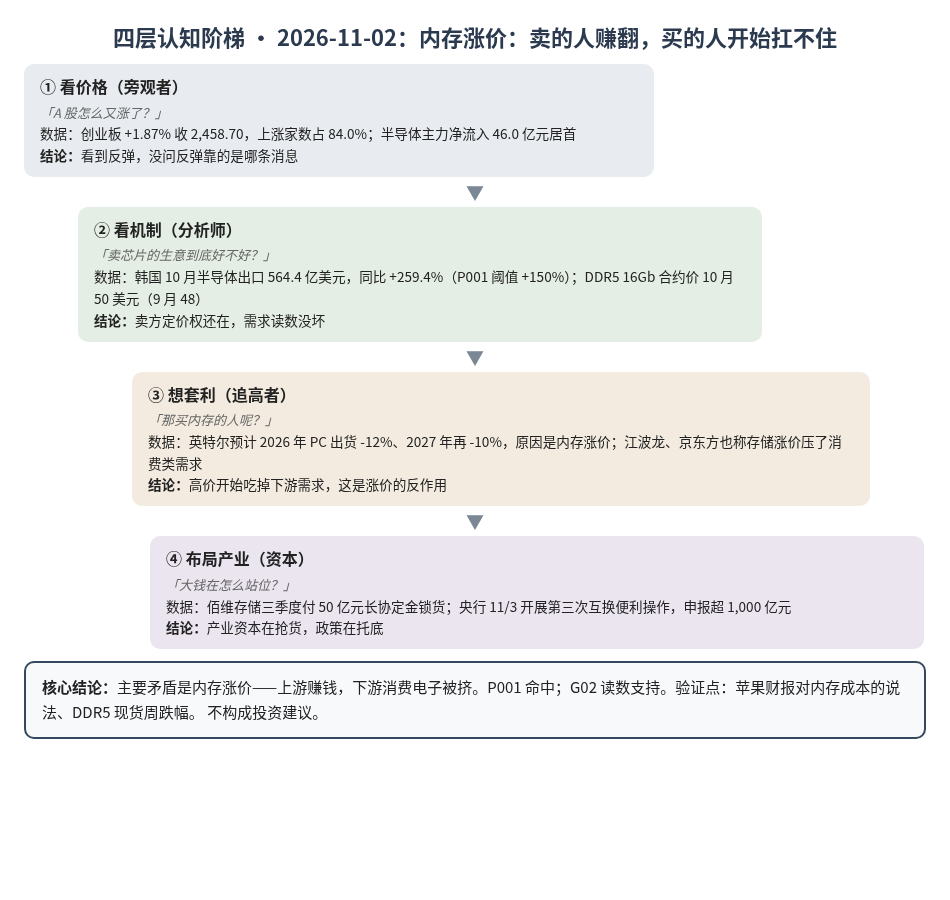
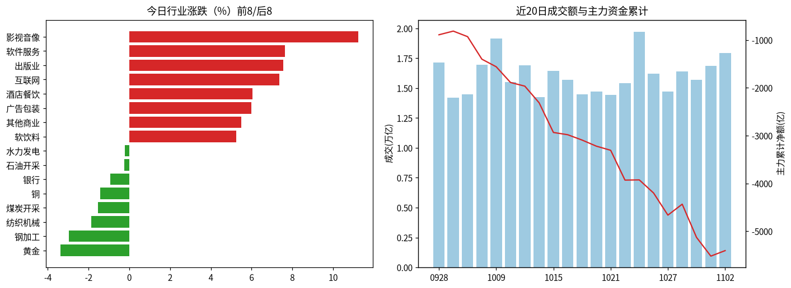
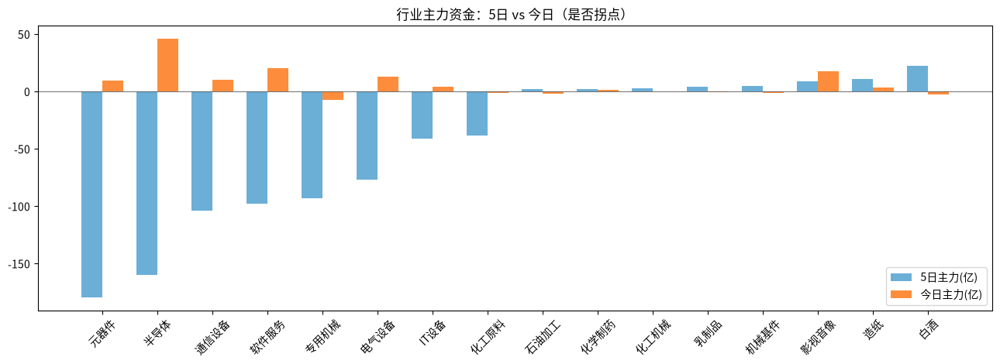

A股投研日报 · 2026-11-02（四层认知版）
- 主线
- 内存越涨越贵，卖芯片的赚翻了，买芯片做电脑的开始扛不住
- 最重要变化点
- 韩国 10 月半导体出口同比 +259.4%，P001 命中；A 股跟着反弹，创业板 +1.87% 收 2,458.70，仍在 2,500 下方
- 机制含义
- 定价权还在内存卖方，但高价开始吃掉下游需求：英特尔预计 PC 出货今年 -12%、明年再 -10%
- 下一个观察点
- 11/5 前 DDR5 16Gb 现货单周跌超 3%，说明涨价的反作用传回了上游
本报告为基于公开数据的研究分析，不构成投资建议。
今日市场概况
数据管道速览（Tushare 收盘数据，规则生成，正文判断见下文）
- 指数：上证指数 +1.08% 收 3,638.03，创业板指 +1.87% 收 2,458.70；深证成指 +1.63%、科创50 +3.11%、上证50 +0.74%、沪深300 +0.79%、中证500 +2.46%、中证1000 +2.73%（Tushare）。
- 量能与宽度：成交 17,952 亿元（20 日均 16,016 亿元）；上涨 4,681 家 / 下跌 818 家，上涨占比 84.0%，个股中位数 +2.0%。
- 主力资金：全 A 主力 +114.9 亿元，连续第 1 日净流入。
- 行业：主力流入居前 半导体（+46.0 亿）、证券（+27.4 亿）、互联网（+24.3 亿）；流出居前 银行（-20.0 亿）、专用机械（-7.5 亿）、水力发电（-7.1 亿）。
- 龙虎榜 / 北向：机构专用席位合计 -6.98 亿元；沪深股通成交前五 宁德时代、贵州茅台、中际旭创、新易盛、北方华创（成交额≠净买入）。
变化点
方法：四层认知阶梯 + 历史周期律。数据 Tushare（见附录）。不构成投资建议。
一、世界观定位
阶段不变，回退条件不变。楚汉层（钱和利率）有一处变化：央行 11/3 开第三次"互换便利"（券商、基金用手里的资产向央行换来国债，再拿国债借钱买股票），31 家机构申报超 1,000 亿元（源），证监会拟放宽公司"护盘式回购"（源）：政策在托底。世界指标今日更新未跑完，五盏灯沿用 10/30 读数（3 黄 2 红：估值、中国信用）。
二、变化一（主变化）：韩国芯片出口 +259%，把市场从恐慌里拉回来
- 看价格：上周五美国费城半导体指数跌 7.2%（源），今天 A 股却普涨，上涨家数占 84.0%，半导体主力净流入 46.0 亿元居首。
- 看机制：韩国 10 月半导体出口 564.4 亿美元，同比 +259.4%，远超 P001 的 +150% 门槛；DDR5 16Gb 合约价从 9 月 48 美元涨到 10 月 50 美元（源）。卖内存的人说了算。
- 想套利：三大硬件行业今天合计净流入约 66 亿元，但 5 日合计仍流出约 443 亿元。一天的回流抵不了一周的出逃。
- 布局产业：佰维存储三季度付了 50 亿元长协定金先把货锁住（源）：买家怕的是拿不到货，不是价格太高。
判断：需求读数没坏，P001 命中；上周跌的是"花钱多、回本慢"的估值，今天回来的是"订单还在"的事实。漏洞：反弹靠一条数据加政策托底，创业板没回到 2,500，还不能说跌完了。
三、变化二：涨价的反作用出现了
英特尔说内存涨价让电脑变贵、买的人变少，预计 PC 出货今年 -12%、明年再 -10%，股价单日跌 28.6%（源）。江波龙称存储涨价压了部分消费客户的采购（源），京东方称显示需求因此下降（源）。
判断：这就是今天的主要矛盾：同一个涨价，上游赚钱，下游被挤。好比面粉涨价，磨坊赚了，街边面包店开始关门。AI 服务器还在抢货，所以 G02（涨价靠产能被 AI 挪走）读数支持；但如果消费端缩得太快，内存现货会先松。
四、上一交易日验证点回顾（10/30 → 11/2）
| 验证点 | 结果 |
|---|---|
| 11/1 韩国出口 > +150% | 命中：+259.4%，P001 命中 |
| 创业板收回 2,500 / 再跌超 3% | 都未命中：+1.87% 收 2,458.70 |
| 三大硬件行业流出低于 100 亿元 | 命中：转为净流入约 66 亿元 |
| 11/5 前 DDR5 现货周跌超 3% | 待验证：今日现货均价持平 |
五、供应链风险敞口（人工复核版）
脚本版见 risk_section_20261102.md。口径为 GB300/NVL72 当量柜年化系统价值；Δ$ 为事件类型假设模板，仅用于排序，非预测。脚本 7 条，误匹配 7 条（券商观点、产品进展、台湾外海小地震无停机报道）。复核后有效断供 Δ$≈0，基线维持年化 EL 57.7 亿美元（10/21）。采集降级：GDELT 限流，巨潮公告匹配未恢复。
六、机会表（产业/环节层面，不构成投资建议）
| 环节 | 逻辑 | 证伪条件 |
|---|---|---|
| 存储（服务器用） | 出口 +259%，买家付定金锁货，定价权在卖方 | DDR5 现货单周跌超 3% |
| 消费电子整机 | 不是机会，是风险提示：成本涨、需求缩 | 苹果称内存成本可消化、毛利率不降 |
中长期展望（3–12 个月与 2027）
3–12 个月：服务器端需求仍支持 G12、G25；但内存高价开始压缩 PC、手机需求，估值灯仍红，硬件股会继续大起大落。
2027：英特尔判断 2027 年内存环境不会明显好转，与 G01（2027 只略紧）相反，G01 仍受挑战，等 John 复核。总闸门仍是 P023（概率 0.55）。
什么会改变展望：①DDR5 现货单周跌超 3%；②又一家大厂下调 2027 资本开支；③苹果等终端大厂集体下调出货。
七、明日/本周验证点（可证伪）
- 11/3 苹果财报：若称内存成本推高、下季毛利率指引下降，说明涨价反作用扩散到手机。
- 11/3 创业板收回 2,500 则反弹延续；跌回 2,413 以下说明今天只是一日反弹。
- 11/3 三大硬件行业主力连续第二天净流入。
- 11/5 前 DDR5 16Gb 现货单周跌超 3%。

一句话总结：韩国芯片出口 +259% 托起反弹，但英特尔说内存太贵、PC 卖不动了。
本报告为基于公开数据的研究分析，不构成任何投资建议。
附录：市场数据（证据底稿）


| 收盘 | 今日% | 5日% | 20日% | MA20 | 成交(亿) | |
|---|---|---|---|---|---|---|
| 上证指数 | 3,638.03 | 1.08 | -1.61 | -4.85 | 3,726.55 | 8,474.59 |
| 深证成指 | 11,010.68 | 1.63 | -4.54 | -14.37 | 11,855.54 | 4,864.27 |
| 创业板指 | 2,458.70 | 1.87 | -6.81 | -21.69 | 2,767.73 | 1,954.72 |
| 科创50 | 1,196.94 | 3.11 | -9.01 | -23.08 | 1,353.41 | 813.10 |
| 上证50 | 2,762.54 | 0.74 | -0.24 | -1.58 | 2,774.46 | 1,589.69 |
| 沪深300 | 4,016.92 | 0.79 | -2.11 | -7.46 | 4,165.49 | 5,288.47 |
| 中证500 | 6,420.23 | 2.46 | -4.36 | -13.27 | 6,851.60 | 3,157.45 |
| 中证1000 | 6,329.34 | 2.73 | -4.55 | -13.23 | 6,764.64 | 3,554.66 |
行业资金热力（按5日主力净额排序，前8/后8）
| industry | 今日% | 5日% | 20日% | 今日主力(亿) | 5日主力(亿) | 资金连续天数 |
|---|---|---|---|---|---|---|
| 白酒 | 3.6 | 7.5 | 15.8 | -2.9 | 22.5 | -1.0 |
| 造纸 | 1.0 | 2.0 | -6.3 | 3.1 | 10.8 | 1.0 |
| 影视音像 | 11.2 | 4.9 | 17.3 | 17.6 | 8.7 | 1.0 |
| 机械基件 | 1.5 | -0.9 | -6.8 | -1.4 | 5.1 | -2.0 |
| 乳制品 | 2.6 | 7.8 | 14.6 | -0.7 | 4.0 | -1.0 |
| 化工机械 | 0.6 | -1.2 | -9.9 | -0.2 | 2.8 | -1.0 |
| 化学制药 | 1.7 | 1.6 | 23.0 | 1.3 | 2.4 | 2.0 |
| 石油加工 | 0.8 | 4.4 | 15.4 | -1.9 | 2.2 | -1.0 |
| 元器件 | 1.5 | -8.3 | -28.9 | 9.5 | -179.4 | 1.0 |
| 半导体 | 2.7 | -7.4 | -2.5 | 46.0 | -159.8 | 1.0 |
| 通信设备 | 0.8 | -13.6 | -37.5 | 10.3 | -104.0 | 1.0 |
| 软件服务 | 7.6 | -6.2 | 0.5 | 20.4 | -98.0 | 1.0 |
| 专用机械 | 2.5 | -6.0 | -19.3 | -7.5 | -93.0 | -3.0 |
| 电气设备 | 3.1 | -1.5 | -11.6 | 13.0 | -76.9 | 1.0 |
| IT设备 | 2.8 | -6.9 | -14.1 | 4.0 | -41.4 | 1.0 |
| 化工原料 | 2.0 | -2.0 | -16.6 | -1.4 | -38.4 | -3.0 |
市场情绪时间序列（近10日）
| trade_date | 成交(亿) | 上涨占比% | 主力净额(亿) | 个股中位涨跌% |
|---|---|---|---|---|
| 20261020 | 14715.3 | 67.9 | -127.9 | 1.0 |
| 20261021 | 14420.6 | 35.6 | -86.3 | -0.4 |
| 20261022 | 15418.6 | 9.6 | -623.7 | -2.5 |
| 20261023 | 19728.5 | 81.2 | 4.3 | 1.6 |
| 20261026 | 16230.9 | 40.4 | -274.6 | -0.5 |
| 20261027 | 14729.0 | 10.9 | -462.7 | -3.0 |
| 20261028 | 16421.0 | 74.6 | 229.2 | 1.3 |
| 20261029 | 15707.1 | 14.0 | -694.9 | -2.6 |
| 20261030 | 16877.1 | 16.0 | -391.8 | -3.1 |
| 20261102 | 17951.9 | 84.0 | 114.9 | 2.0 |
今日上涨4681家/下跌818家，涨幅≥9.8% 218家、跌幅≤-9.8% 13家¹。
龙虎榜侧写：机构专用席位合计 -6.98 亿；净买入居前 捷成股份(+1.39亿)、粤传媒(+0.99亿)、皇台酒业(+0.94亿)，净卖出居前 安集科技(-3.16亿)、华是科技(-1.95亿)、芒果超媒(-1.31亿)。 沪深股通活跃股：成交前五为宁德时代、贵州茅台、中际旭创、新易盛、北方华创（成交额≠净买入）。
注：¹涨跌停为按±9.8%阈值近似（limit_list_d无权限）。²行业为Tushare stock_basic分类自行聚合（sw_daily/ths_daily/行业资金流接口无权限），成交加权、剔除N/C新股，成分≥8只。³主力=大单+特大单净额（moneyflow）。⁴2024年8月起北向每日净买入停止披露，moneyflow_hsgt/hsgt_top10数值为成交口径，不可解读为净流入。⁵新闻/公告接口无权限，改用新浪财经7x24公开快讯自动抓取+人工补充。
接口状态：trade_cal:OK；stock_basic:OK；index_daily:OK；moneyflow_hsgt:OK；hsgt_top10:OK；top_list:OK；top_inst:OK；index_dailybasic:OK；新浪7x24(公开):OK 1798条（11-01 18:03 起）